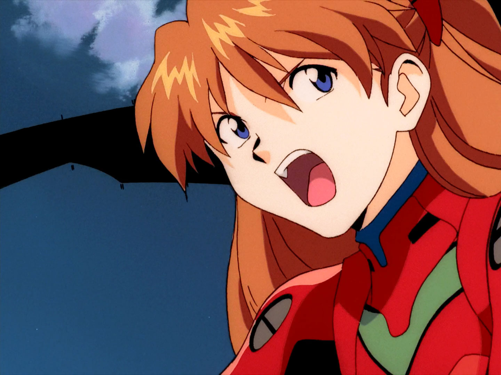
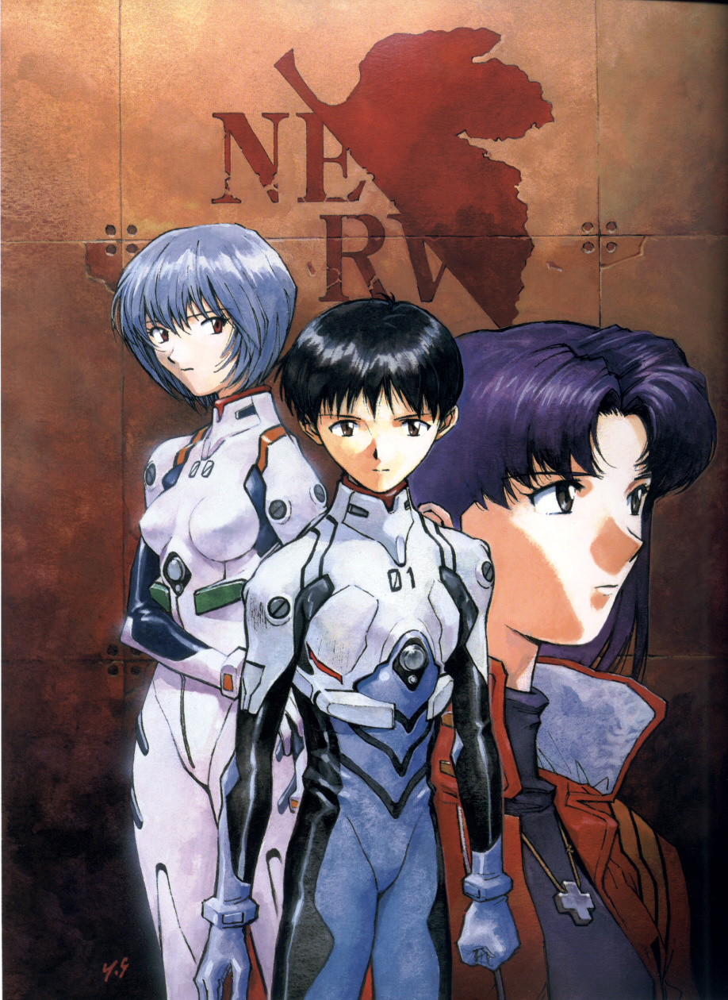

碇真嗣(Ikali ShinJi)
EVA壹号驾驶员 第三适格者
脾气温顺、重视朋友，经常负责美里的起居及为绫波丽收拾房间。律子评论他的行为方式是听从他人的指令。
平常的性格表现十分胆小怕事、内向且没有自信心，不擅长与他人交际。母亲过世后就住在亲戚家中。有着内向又纠结的性格，不喜欢接触陌生人，一直只是照着别人的要求而生活。
习惯把自己的内心向外界封闭──然而不愿意与人接触的同时又很在乎别人对待自己的看法，是个本质上有所矛盾的人。之后在和朋友们的相处中慢慢地敞开了心扉。
看似弱气却十分固执，在极端情况下会叛逆甚至反抗。在非常时刻的觉醒会强大到让人震撼。新剧场版：破中更是展现出了天元突破般的气势。
「马尔杜克机关」所选中的第3适任者（Third Children），本篇为初号机的驾驶员，新剧场版Q中与渚薰共乘13号机。
初战登场时同步率超过40%，由TV后期明日香听到的反应可知似乎是一个数值颇高的结果。在对战力天使时和初号机同步率超过400%（因为初号机内部寄宿着母亲碇唯的灵魂），这也是那一句名言的来源。在新剧场版终中和初号机更是达到了正无限的同步率。
负责操持家务、料理。擅长大提琴演奏，连一向待人待事状若刁钻的明日香听过其大提琴演奏后也给予赞扬，但据本人所说接触大提琴只是因为幼时被其长辈有所期待，并非个人喜好。
《破》中房间布置暗示了热爱天文，《Q》中，学会了弹钢琴，《终》中则学会了钓鱼。
漫画版中真嗣在来到第三新东京市之前是个好学生，只是来了之后没时间读书导致成绩退步。
惣流·明日香·兰格雷(Asuka Langley Soryu)
EVA贰号驾驶员 第二适格者

惣流·明日香·兰格雷（日语：惣流・アスカ・ラングレー，英语：Asuka Langley Soryu）是《新世纪福音战士》当中的主角之一。明日香是第二适任者，也是福音战士2号机的驾驶员。她同时拥有德国与日本的血统，在德国出生及长大，但她是美国公民。
明日香只有四分之一的日本血统，所以外表看似欧洲人。她在德国出生，也在德国长大，虽然她的国籍是美国。明日香的母语是德语，与家人交谈和战斗（旧剧场版）的时候会用德语。明日香也是一个神童，而且在青少年时即获得大学学位（没有提及是哪一个领域）
她的日语相当流利，但是对于日文汉字的读与写并不擅长。火红的印象色与暴躁的脾气也是她的特征，而且对身为EVA驾驶员感到相当骄傲
她经常把头部接口装置当成发箍来佩戴，因为她想要周遭的人知道她是EVA驾驶员。而她的著名台词“你白痴啊？”（あんたバカァ？）曾一度在日本校园中十分流行，而这句话主要是用来攻击碇真嗣。即便如此，她对真嗣来说还是很有魅力。
明日香与其他的互动是高傲且强势的，她对担任驾驶员这件事都会相当自豪。作品的爱好者将她归为傲娇属性的人物。
然而她在其他人面前的形象是为了掩饰她是一位非常脆弱及没有安全感的女孩（会从她所作的梦或思想来表现出来）。
明日香常会激烈而且强制影响其他人的空间，特别是碇真嗣。她有强烈的需求让自己感到傲慢，而且很不擅长去处理自己的失败.
绫波丽(Ayanami Rei)
EVA零号机驾驶员 第一适格者
绫波丽（台湾译绫波零）是《新世纪福音战士》及其衍生的EVA系列的漫画、游戏等作品的登场角色，第一女主角。
EVA零号机驾驶员，EVA第一适格者。随EVA计划一同启动的少女，少女时期一直在研究所生活，成长后一直作为EVA系列研制和启动的实验品，驾驶实验试作机零号机，提供实验数据。
绫波的过去在故事中被刻意隐藏着，出生时间的纪录完全被消除，不过有证据显示她可能不完全是人类。赤木律子曾说她是诞生在NERV总部深处的某个房间中，而在故事剧情中也提到如何去创造她。
《Red Cross Book》曾经描述绫波丽是根据碇唯的“残余”来创造出来的，时间就在碇唯被初号机吸收之后（2004年）。
绫波是素食主义者，同时动画也暗示她不会做梦。
在故事一开始的时候，绫波丽相当内向，仿佛没有情感，也很少与其他人互动，除了碇源堂以外。她一开始对他相当忠心，不过还是会保持着一定的距离。
随着故事的进行，绫波丽开始与其他人有比较深入的互动，并且显露出真正的情感，甚至会悲伤与哭泣。
绫波丽慢慢接近碇真嗣，虽然他们的同班同学认为他们之间的感情非常明显，只是他们自己没有察觉到。直到铃原冬二告诉她为止，绫波丽都没有了解到自己关心着碇真嗣。
在新世纪福音战士的漫画版中，绫波丽有时候更具有人性，更常对于人之间的互动产生反应。与碇真嗣之间的互动被暗示是这种改变的主要因素。
"无论如何，她都必须被描述成一位非常不幸的少女，而且没有什么存在感。"
“情绪的改变会导致脸上的肌肉紧缩，表现出神情。绫波丽是面无表情的，但是她并不是没有情绪，或是说她仅仅只是无法表达出来？”
“这是在导演告诉我的时候开始的，"她并不是没有情绪，她只是不知道那是什么" 他技术性的要求我念台词时将声音尽可能的平板。但她显然是个人类，有血有肉"。"没有感情"与"不明白感情"之间有着巨大的差别。毕竟，她可以产生感情，她曾经学习过...”
渚薰(Nagisa Kaworu)
第五适格者 最后使徒
渚薰是《新世纪福音战士》及其衍生作品的登场角色。
于第二次冲击的那天出生，实际上是在那一天被制造出来的最后使徒，有着人类的外形。拥有亚当的灵魂。
人类的外形是一个有着银灰色头发的美少年。身材纤细，高而瘦，时常带着温和的笑容，经常思考一些人类思想与哲学的问题，喜欢音乐。但唱歌疑似跑调（声优梗）。为了碇真嗣得到幸福可以付出自己的生命……
渚薰的名字，“渚”可以拆分成“シ”和“者”。
在日语中，“渚”的意思是水边的陆地。TV版中，渚薰也是从湖边登场；新剧场版中则对应其同为第一使徒与第十三使徒的身份。
“シ”和“者”连起来，有“死者”或“使者”的意思（日语发音相同）。
渚薰可以释放绝对领域（AT力场），他的AT力场强大到可以截断一切机械波、光波和粒子射线，形成一个绝对纯净的"结界"，这种力场也可用作攻击，有类似冲击波的效果。
像力天使那样拿绝对领域当板砖拍人应该也没问题。
渚薰似乎拥有操纵电子设备的能力，或者说是一种特殊的同化能力。新剧场版里面修好真嗣的随身听和轻易拆下真嗣的炸弹项圈就是证明。
因为渚薰和EVA都是由亚当衍生而来（初号机除外），所以他可以同化没有灵魂的EVA，而他之所以能够同化二号机，是因为它的灵魂自我封闭了。
设定上拥有亚当灵魂的渚薰绝对领域的强度要在剧中被称为【最强拒绝型使徒】的力天使之上，是唯一既拥有使徒的生命之果又拥有人类的智慧的存在，理论上的最强使徒。但因为剧情每次都是自愿赴死，一次都没有出过全力

故事描述的是一个有关“第二次冲击”的记事
公元2000年有颗巨大的陨石坠落在南极冰山附近（政府宣称），高温造成部分冰块溶化，连带使得全球水位上涨，接下来的天灾人祸更是连绵不断.
公元2015年又出现了新的入侵者，一种似人的巨大机械战斗群，人们将之称为”使徒”，大概是影射他们是上帝派来的使者，要来消灭作恶多端的人类吧。
人类此刻的各种军事武器对使徒可说是毫无用处，为此，当时地球的政治中心决定重用NERV这个组织，他们以最精密的技术，花费巨资研究出一种以驾驶员的神经直接控制的”泛用人形决战兵器”，这种高科技产物将驾驶员与机器做了精细的契合，籍由意志及身体的反映来控制EVA。
不过由于当时这些技术还在研发阶段，所以有许多障碍还无法立即克服。而且因为并不是每个人都能自由的驾驶EVA。驾驶人选一直是NERV最头疼的地方，除了符合条件的人难觅，而且还必须经过几个月训练才能和EVA达到同步活动的基本能力。
而后，在世界上发现了3名可以驾驶EVA的少男少女，人们把希望都寄托在了他们身上。
作品相关
新世纪福音战士，是日本历史上少有的能带来广泛社会影响的现象级作品(被公认为日本最伟大的ACG圈钱作品之一)。
作品应用了当时颇具革命性的意识流手法，扑朔迷离、庞大复杂的故事情节，大量的神秘学、哲学、心理学概念，以及宗教符号的使用，都使得其在日本国内和国际上引起了巨大反响和争议，并成为日本动画史上的一座里程碑。但主要是因为后面没钱了(真实原因是工期不够).
虽然是在作者十分困顿的情况下随着播放进度边写边放送所作，但整体作品仍然具有完善和有趣的剧情。作品初期注重描写人物对话及战斗，随后通过情节的推进开始着重于人物内心的叙述。
在TV版的后期阶段，借助强烈象征意味的画面与配音的闪现，以此表现出的精神分析性的叙述可以说是本作的标志。
在TV放送后，日本产生“社会现象”级别的巨大回响与冲击，《新世纪福音战士》也成为当时的热议话题。即便在新剧场版陆续放出的现在，仍然拥有广泛的衍生品商品和火爆的人气。
社会背景
二战结束后，依托冷战红利和世界市场，日本从废墟上进行重建并急剧地从半工业半农业国家转型为高度城市化和工业化国家。这一剧烈过程虽然带来了经济的繁荣，但是也带来了文化上的严重错位、代际冲突、精神压力。普通的日本人也不得不在短时间内经历许多次文化变革（参照日本社会在战后进行的多次左翼社会运动）。
同时产业调整带来了社会结构的转型，日本社会逐渐向原子化和“小宇宙化”深入发展，个人独立性的增强在使个人开始独立于传统家庭的同时也越来越孤立。
以个人为单位，符合了现代生产和消费的需要，使得日本经济在60年代迅速崛起并在80年代成为全球第二大经济体（中国在2012年超过日本成为第二大经济体）。
90年代日本经济泡沫破裂，经济陷入长期的低迷（日本学术界一般称此时期为“失去的20年”）。后泡沫经济时代的日本年轻人成长在不景气的社会环境下，见证了消费旺盛的社会逐渐被“低欲望社会”取代。
消费主义的破产导致追求个人感官的生活方式与自我怀疑结合，形成了独特的日本ACG亚文化和宅文化，在人造的符号化世界满足自己的欲望而不愿意接触萧条的社会。
“天才”

1960年，庵野秀明出生于日本山口县宇布市一个并不富裕的家庭。他自幼喜欢看动画与特摄片。
1974年，由漫画家松本零士执导的原创电视动画《宇宙战舰大和号》播出，年少的庵野秀明深受影响，由此埋下对科幻、机甲类动漫的兴趣。
高中时，庵野秀明就读于山口县立宇部高等学校。在此期间，他购买了8毫米摄像机，并创作动画、影片。
1987年动画电影《王立宇宙军》虽然素质上佳，但票房却惨不忍睹，因此而成立的由DAICON FILM脱胎而成的GAINAX也陷入了债务危机，这也迫使原本准备拍完该片就解散的GAINAX为了还债不得不继续运营下去。
这一部承载着极高梦想作品的失败，也令庵野秀明始料不及。庵野本人也因理想与现实间的差距而焦躁与烦恼。
随后庵野抱着怨念做了“半裸体的美女开着巨大机器人冲向宇宙”的《飞越巅峰》，没想到相当成功。从此，观众的庸俗在庵野脑海里留下了深刻的印象，在后来也直接影响了《EVA》的创作，比如第25话，26话
庵野早期取得了一些商业化成功，但没有一部有名的作品。因此有一次在家乡被问及职业时，庵野无言以对，非常羞愧，于是计划制作《新世纪福音战士》。这也是《新世纪福音战士》的起因之一。